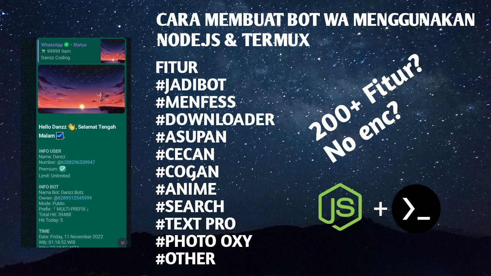

Download script bot WhatsApp v1.0.0 by Danzz Coding.

Information
Vertical_align_bottom
Download Files
View in Github
Instalasi
$ apt update && apt upgrade
1. Regist in https://replit.com
Build Pack
pkgs install ffmpeg
Ffmpeghttps://github.com/Danzzxcodes/heroku-buildpack-ffmpeg-latest.git https://github.com/Danzzxcodes/heroku-buildpack-webp-binaries.git